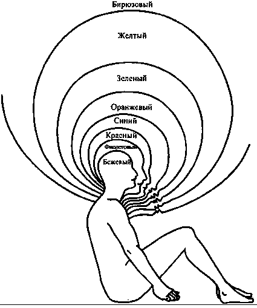

Спиральная динамика и мышление второго порядка
Глава "Спиральная динамика: пример волн бытия"
из книги Кена Уилбера "Интегральная психология".
Полная версия. Сокращенная версия.
Вернемся теперь к Спиральной динамике и кратко рассмотрим один вариант потоков самосознания и волн их развертывания. Помните, что это просто одна серия фотографий Великой Реки; в действительности, существует множество разных потоков, которые относительно независимо проходят через базовые волны*; и человек может одновременно находиться на разных волнах в их различных потоках (как показано на интегральной психограмме, рисунок 1).
Рисунок 1. Интегральная психограмма


Модель Спиральной динамики не включает в себя состояния сознания и не охватывает более высокие, надличностные волны сознания. Однако в границах охватываемой ей территории она дает очень полезную и элегантную модель самости** и ее путешествия через то, что Клер Грейвз назвал "волнами бытия".
Бек и Коуэн (которые сохраняют полную верность системе Грейвза) обозначают эти уровни само-бытия как матрицы ценностей (Ц-МАТРИЦЫ, V-MEMES). Каждая Ц-МАТРИЦА - это одновременно психологическая структура, система ценностей и стиль адаптации, которые могут выражаться множеством способов, от мировоззрений до манеры одеваться и до форм государственного управления. Различные Ц-МАТРИЦЫ, в определенном смысле, представляют собой "разные миры", доступные самости в ходе ее развития по великой спирали бытия под действием как ее собственной динамики, так и меняющихся условий жизни. И каждая Ц-МАТРИЦА - это холон, который превосходит и включает в себя своих предшественников - это развитие как расширение охвата. На рисунке 2 я привожу "Диаграмму Грейвза", которую он сам использовал для иллюстрации этого "матрёшечного" включения (которое мы бы назвали холархией).
Рисунок 2. Диаграмма Грейвза: Холоны Возрастающего Развития

Бек и Коуэн используют разные названия и цвета для обозначения разных уровней мира самости, число которых составляет от восьми до девяти. Но это не просто проходящие фазы в развертывании замости; они представляют собой постоянно доступные способности и стратегии адаптации, которые, коль скоро они возникли, могут активироваться при соответствующих условиях жизни (например, инстинкты выживания могут активироваться в чрезвычайных ситуациях; способности связывания могут активироваться в близких отношениях между людьми и так далее). Более того, по словам Бека: "Спираль является беспорядочной, а не симметричной, и состоит из многообразных смесей, а не чистых типов. Они образуют мозаики, сетки и гибриды".
Первые шесть уровней - это "уровни существования", для которых характерно "мышление первого уровня". Затем происходит революционный сдвиг в сознании: появляются "уровни бытия" и "мышление второго уровня". Вот краткое описание всех восьми волн, доли населения мира, находящегося на каждой волне, и доля общественной власти и влияния, которыми обладает каждая из этих групп.
Бежевый цвет: Архаически-инстинктивный уровень. Уровень физического самосохранения. Приоритет отдается пище, воде, теплу, сексу и безопасности. Инстинкты и навыки используются только для выживания. Отдельная самость едва пробуждается. Для продолжения жизни формируются группы выживания.
Где наблюдается: В первобытных сообществах, у новорожденных младенцев, при старческом слабоумии, на последней стадии болезни Альцгеймера, у психически больных бездомных, при массовом голодании, при военном неврозе. 0,1 % взрослого населения земного шара, 0% власти.
Пурпурный цвет: Магически-анимистический уровень. Мышление по преимуществу анимистического типа; землю переполняют злые и добрые магические духи, которые оставляют за собой благословения, проклятия и колдовские чары, определяющие все события. Общности формируются по типу этнических племен. Духи предков связывают племя воедино. Политические связи устанавливаются в соответствии с принципом кровного и племенного родства. Этот уровень выглядит "холистическим", но на деле является "атомистическим": "есть название для каждого изгиба реки, но нет названия для самой реки".
Где наблюдается: Верования в злое колдовство, наподобие культа вуду, кровные клятвы, кровная месть, талисманы удачи, семейные ритуалы, этнические магические верования и предрассудки; распространен в условиях Третьего мира, в бандах, спортивных командах и корпоративных "кланах". 10% населения Земли, 1% власти.
Красный цвет: Уровень богов силы. Первое появление самости, отдельной от племени - могущественной, импульсивной, эгоцентрической, героической. Мифические духи, драконы, чудовища и богатыри. Феодальные властители защищают своих подданных в обмен на их верность и труд. Основа феодальных империй - сила и слава. Мир видится как опасные джунгли, полные опасностей и хищников. Герой покоряет силой, побеждает хитростью и подчиняет; в полную меру наслаждается собой, не ведая сожаления и раскаяния.
Где наблюдается: "Ужасная раздвоенность", бунтующая молодежь, менталитет "переднего края", феодальные королевства, эпические герои, герои "а ля Джеймс Бонд", солдаты удачи, неистовые рок-звезды, Атилла, Повелитель Мух. 20% населения Земли,
Синий цвет: Конформистский Стандарт. В жизни есть смысл, направление и цель, и все определяется всемогущим Другим или Порядком. Этот праведный Порядок насаждает кодекс поведения, основанный на абсолютистских и неизменных понятиях "правильного" и "неправильного". Нарушение кодекса или правил влечет за собой суровое, возможно, вечное наказание. Соблюдение кодекса приносит вознаграждение за праведность. Основа древних наций (цивилизаций). Жесткая социальная иерархия; патернализм; существует один и только один правильный образ мышления обо всем. Закон и Порядок; импульсивность контролируется посредством вины; буквалистские и фундаменталистские убеждения; все общее повиновение и подчинение Порядку. Часто бывает "религиозным" (в смысле мифического-членства; Грейвз и Бек называют этот уровень сакрально/абсолютистским"), но может быть и светским или атеистическим Порядком или Миссией.
Где наблюдается: Пуританская Америка, конфуцианский Китай, викторианская Англия, описанная Диккенсом, сингапурская дисциплинированность, кодексы чести и рыцарства, исламский фундаментализм, молодежные скаутские организации, "моральное большинство", патриотизм. 40% населения Земли, 30% власти.
Оранжевый цвет: Научный Прогресс. На этой волне самость "спасается" от "стадного менталитета" синего уровня и ищет истину и смысл с индивидуалистической точки зрения - гипотетико-дедуктивной, экспериментальной, объективной, механистической, операциональной - типично "естественнонаучной". Мир представляется рациональной и хорошо смазанной машиной, функционирующей в соответствии с естественными законами, которые можно изучить и освоить, а затем манипулировать ими в собственных целях. Ориентирован на личный успех и карьеру, которые (особенно в Америке) понимаются, прежде всего, как получение материальных благ. Научные законы управляют политикой, экономикой и событиями жизни человека. Мир подобен гигантской шахматной доске, на которой разыгрываются сложные партии, и победители властвуют над побежденными. Рыночные бизнес-альянсы; эксплуатация природных ресурсов ради достижения стратегического преимущества. Основа корпоративных государств.
Где наблюдается: Эпоха Просвещения, Уолл Стрит, Ривьера, нарождающийся средний класс во всем мире, индустрия косметики, спортивная охота, колониализм, холодная война, индустрия моды, материализм, либеральный индивидуализм. 30% населения Земли, 50% власти.
Зеленый цвет: Восприимчивая Самость. Идеалы общности, связи между людьми, осознание экологических проблем, "сетевое" мышление. Человеческий дух должен освободиться от алчности, догматизма и разобщенности; чувства и взаимный интерес преобладают над холодной рациональностью; забота о земле, жизни, Гее. Противостояние иерархии; установление горизонтальных связей. Проницаемая самость, соотносительная самость, групповое взаимодействие. Акцент на диалоге и взаимоотношениях. Основа коллективных сообществ (т. е. свободно выбираемых групп, основанных на общности чувств и мнений). Решения принимаются путем соглашения и достижения общего мнения (оборотная сторона: бесконечная "переработка" и неспособность приходить к решению). Обновленная духовность, гармония, обогащение потенциальных возможностей каждого человека. Сильный эгалитаризм, антииерархизм, плюралистические ценности, социальное конструирование реальности, разнообразие, многокультурность, релятивистические системы ценностей; это мировоззрение часто называют плюралистическим релятивизмом. Субъективное, нелинейное мышление; большая степень аффективного тепла, чуткости и заботы о Земле и всех ее обитателях.
Где наблюдается: Движение глубинной экологии, постмодернизм, голландский идеализм, психотерапия Карла Роджерса, канадская система здравоохранения, гуманистическая психология, теология освобождения, экуменическое движение (Всемирный Совет Церквей), Гринпис, движение за защиту прав животных, экофеминизм, постколониализм, Фуко/Деррида, политкорректность, движения в защиту разнообразия, защита прав человека, экопсихология. 10% населения Земли, 15% власти.
С завершением зеленой матрицы человеческое сознание готовится к квантовому скачку к "мышлению второго порядка". Клэр Грейвз называл это "важнейшим скачком", которым преодолевается "невероятный по глубине своего значения разрыв". По существу, обладая сознанием второго порядка, человек может мыслить как вертикально, так и горизонтально, используя и иерархии и гетерархии; он впервые может живо охватить умом весь спектр внутреннего развития и, таким образом, понимать, что каждый уровень, каждая матрица и каждая волна имеет решающее значение для здоровья всей спирали развития.
Я бы сказал, что, поскольку каждая волна представляет собой "превосхождение и включение в себя", то она является фундаментальной составляющей всех последующих волн, и значит следует лелеять и принимать каждую волну. Более того, каждая волна сама может быть активирована или повторно активирована, если того требуют жизненные обстоятельства. В экстремальных ситуациях мы можем активировать красные силы побуждения; в ответ на хаос нам, возможно, потребуется активировать синий порядок; при поисках новой работы нам могут пригодиться оранжевые побуждения к успеху, а в браке и отношениях с друзьями - зеленое близкое связывание.
Но ни одна из этих матриц не способна полностью понимать значение существования других матриц. Каждая из матриц первого порядка считает, что ее мировоззрение - это правильная или наилучшая точка зрения. Если это ставят под сомнения, она реагирует отрицательно; всякий раз, когда ей угрожают, она яростно сопротивляется, используя доступные ей средства. Синему порядку очень неприятны и красная импульсивность и оранжевый индивидуализм. Оранжевый успех считает, что синий порядок предназначен для дураков и неудачников, а зеленое связывание слабо и несущественно. Зеленый эгалитаризм терпеть не может превосходства и ранжирования ценностей, "больших картин" и всего, что выглядит авторитарным, и потому остро реагирует на синее, оранжевое и все, что идет после зеленого.
Все это начитает меняться при возникновении мышления второго порядка. Так как сознание второго круга полностью осведомлено о внутренних стадиях развития - даже если оно и не может их четко выделить - оно отступает назад и схватывает общую картину и, таким образом, понимает необходимую роль, которую играют все разнообразные матрицы. Используя то, что мы бы назвали зрительной логикой***, осознание второго порядка мыслит в категориях всей спирали бытия, а не только категориями любого отдельно взятого уровня.
Там, где зеленая матрица использует раннюю или начальную зрительную логику для постижения многочисленных разнообразных систем и контекстов, существующих в разных культурах, мышление второго порядка идет дальше и начинает соединять эти плюралистические системы в интегральные и холистические спирали и холархии (Бек и Коуэн сами говорят, что мышление второго уровня оперирует с "холонами"). Эти холархии включают в себя как внутренние, так и внешние уровни развития, и в вертикальном, и в горизонтальном измерениях, что приводит к многоуровневому, многомерному, высоко холоархическому воззрению.
В мышлении второго порядка можно выделить две основных волны (соответствующие тому, что мы бы определили как средний и поздний зрительно-логические уровни).
Желтый цвет: Интегративный. Жизнь - это калейдоскоп естественных иерархий [холархии], систем и форм. Наивысший приоритет имеют гибкость, спонтанность и функциональность. Различия и множественность могут интегрироваться во взаимозависимые, естественные потоки. Там, где это уместно, эгалитаризм дополняется естественными степенями превосходства. Знания и компетентность должны иметь более важное значение, чем ранг, власть, статус или групповая принадлежность. Преобладающий мировой порядок является результатом существования разных уровней (матриц) реальности и неизбежных паттернов движения вверх и вниз по динамической спирали. Хорошее государственное управление облегчает подъем социальных структур через уровни возрастающей сложности (вложенную иерархию).
Бирюзовый цвет: Холистический. Универсальная холистическая система, холоны/волны интегративных энергий; объединение чувств со знанием [кентавр****]; множество уровней переплетаются в единую сознательную систему. Всеобщий, но живой и осознанный порядок, не основывающийся на внешних правилах (как на синем уровне) или групповых связях (как на зеленом уровне). "Великое объединение" возможно в теории и в действительности. Иногда вызывает возникновение новой духовности как сети всего сущего. Бирюзовое мышление использует всю спираль; видит множественные уровни взаимодействия; замечает обертоны, мистические силы и всепроникающие текучие состояния, пронизывающие любую организацию.
Мышление второго порядка: 1% населения Земли, 5% власти.
Поскольку всего 1% населения Земли характеризуются мышлением второго порядка (и всего 0,1% находятся на бирюзовом уровне), сознание второго круга встречается относительно редко, поскольку оно в данный момент является "передним краем" коллективной эволюции человечества. Бек и Коуэн приводят множество примеров, от концепции ноосферы Пьера Тейяра де Шардена до роста влияния трансперсональной психологии, и делают вывод, что мышление второго уровня начинает встречаться все чаще - а на горизонте видны еще более высокие уровни.
В то же время, можно заметить, что мышлению второго порядка приходится возникать на фоне значительного сопротивления со стороны мышления первого порядка. На самом деле, как мы увидим в главе 13, вариант постсовременной зеленой матрицы уже активно боролся с возникновением более интегративного и холархического мышления. (Кроме того, представители этой матрицы, фактически, предали анафеме во всех университетах исследования развития, которые зависят от мышления второго порядка. Именно поэтому исследователей, представленных в этой книге (и в таблицах), по любым критериям можно считать героями и героинями, которым приходилось вести свою работу в чрезвычайно враждебном окружении). И все же, как указали Грейвз, Бек и Коуен, без мышления второго порядка человечество обречено оставаться жертвой глобального "аутоиммунного заболевания", где различные матрицы борются друг с другом в попытках добиться верховенства.
И в то же время, второй порядок возникает именно из большого фонда зеленых (и иногда оранжевых) матриц [см. примечание]. Именно из плюралистических точек зрения, освобождаемых зелеными матрицами, строятся холистические сети. Поэтому эта книга - приглашение тем представителям зеленого уровня, которые готовы двигаться дальше, не отказываясь от этого уровня, но обогащая его.
Примечание
Дженни Уэйд (Wade) тщательно изучавшая работы Грейвза, считает, что оранжевый (достижения) и зеленый (принадлежность) представляют собой не два разных уровня, а два разных варианта выбора, предлагаемых синему (конформистскому), и поэтому и оранжевый, и зеленый могут продвигаться прямо ко второму порядку (аутентичному). С точки зрения этой концепции, данную книгу можно рассматривать как приглашение и оранжевому и зеленому принять перспективы второго порядка.
В то же время, Спиральная динамика - и исследования психологии развития в целом - показывают, что многие философские споры в действительности определяются не уровнем лучших объективных доводов, а субъективным уровнем спорящих. Никакое количество оранжевых научных доказательств не убедит сторонников синих мифических парадигм; никакое количество зеленого связывания не произведет впечатления на оранжевую агрессивность; никакое количество бирюзовой холархии не вытеснит зеленую враждебность - если только индивид не готов к дальнейшему развитию в динамической спирали эволюции сознания. Вот почему такие "межуровневые" споры разрешаются крайне редко, и все участвующие в них стороны обычно чувствуют, что их никто не услышал и не оценил. Это также побуждает мыслителей второго порядка изыскивать способы двигать спираль, мягко или путем стратегического потрясения.
Когда в тексте я говорю, что зеленое зачастую боролось, чтобы не допустить возникновения мышления второго порядка, я, разумеется, имею в виду, что все матрицы первого порядка сопротивляются возникновению сознания второго круга. Научный материализм (оранжевый) проявляет агрессивный редукционизм по отношению к построениям второго порядка, пытаясь сводить все внутренние этапы к объективным нейронным событиям. Мифический фундаментализм (синий) зачастую бывает оскорблен тем, что он считает попытками расшатать его заданный Порядок. Эгоцентризм (красный) вообще игнорирует второй порядок, а магическое (багровое) напускает на него порчу.
Зеленый уровень обвиняет сознание второго круга в авторитаризме, жесткой иерархичности, патриархальности, маргинализации, дискриминации и проч. и проч. Другими словами, он берет плюралистическую критику, которую он разрабатывал и правильно применял к позициям предшествующих уровней (особенно синего и оранжевого, которые нередко виновны во всех грехах, приписываемых себе зеленым), а затем неверно и необоснованно направляет эту критику против пост-зеленых построений, где, как можно показать, она, быть может, диктуется благими намерениями, но проходит мимо цели (она, как правило, искажает желтые и бирюзовые построения, на что быстро указывают исследователи второго порядка).
Зеленый уровень доминировал в области культурологических исследований в течение последних трех десятилетий. С одной стороны, зеленый плюралистический релятивизм заметно расширил сферу культурологических исследований, включив в нее многие ранее маргинализированные народы, идеи и повествования. Он проявил чуткость и заботу в своих попытках исправить социальный дисбаланс и избежать практик исключения. Ему принадлежат основные инициативы в области прав человека и охраны окружающей среды. Он выступил с резкой и зачастую убедительной критикой философских и метафизических систем, социальных практик и научных парадигм оранжевых и синих матриц памяти, для которых характерны исключающий, патриархальный, сексист-ский и колониальный уклон.
С другой стороны, поскольку эта критика оказалась эффективной против уровней, предшествующих зеленому, зеленый попытался применить ее и против всех пост-зеленых этапов, и это привело к самым печальным результатам. В пылу благородной борьбы против жестких социальных иерархий синего уровня, зеленый подверг осуждению и все холархии второго порядка - что сделало очень трудным и, нередко, невозможным, его дальнейшее движение вперед к более холистическим, интегрально-аперспективным конструкциям.
В большинстве таблиц саморазвития вы можете видеть движение от мифического абсолютизма и рационального формализма (синий и оранжевый) через этапы плюрализма и релятивизма (зеленый) к этапам интегрализма и холизма (желтый и бирюзовый). Зеленая матрица, эффективно подвергая сомнению абсолютизм синего и оранжевого, затем ошибочно считала все универсалии и холархии принадлежащими к тому же порядку, и это часто накрепко замыкало ее в мышлении первого порядка.
И все же, как показывает Спиральная динамика, именно из здоровых рядов зеленого уровня возникает второй порядок, и потому большая часть замечаний, а иногда и полемических уколов в моих последних работах касалась зеленого уровня, в попытке побудить его более широко взглянуть на свои собственные предпосылки. Эти тычки, как правило, не вызывали ко мне симпатии у сторонников зеленого уровня, но они оживили нашу беседу, чего неоднократно не удавалось добиться с помощью вежливости. (Мои первые двенадцать книг на протяжении более чем двадцати лет были неизменно вежливыми и не содержали ни одной полемической фразы в адрес упомянутых теоретиков; моя тринадцатая книга (Sex, Ecology, Spirituality) была полемической - как сказала бы Мисс Пигги из Маппет Шоу, "Я старался быть вежливым".). Время покажет, помог ли мне полемический тон или навредил (см. Введение к CW7). Однако то, что я хотел сказать, достаточно просто: чтобы совершить прыжок в гиперпространство мышления второго порядка, представители зеленой матрицы могли бы обратить внимание на следующее: (1) В соответствии с зеленым плюрализмом, все системы привязаны к контекстам, и потому, если проводить эту программу в полной мере, следует признать, что все реля-тивизмы и плюрализмы также привязаны к контекстам: у них самих есть более широкие и глубокие контексты, связывающие их воедино в еще более крупные системы - следовательно, необходимо признать эти более крупные системы и затем начать обрисовывать связывающие их все универсальные-интегральные контексты. (2) Системы эволюционируют в пространстве и времени; следовательно, необходимо прослеживать это эволюционное развитие. (3) Единственный способ это сделать состоит в признании иерархий наряду с гетерархиями (а это приводит к холархиям). Как только это происходит, важные достижения зеленого уровня могут быть восприняты и включены в продолжающийся процесс развертывания эволюции сознания. Зеленый уровень не теряется и не отрицается - он включается в большее целое и тем самым обогащается.
Что касается Спиральной динамики, мои незначительные критические замечания состоят в том, что она в недостаточной степени охватывает состояния сознания и высшие надличностные структуры сознания; и что она представляет собой пример модели фазы-2, и недостаточно приближена к модели фазы-3 (см. прим. 9.15). То есть, она обращает мало внимания на эмпирически подтвержденный факт того, что различные линии развития могут одновременно находиться на разных уровнях: индивид не только может в одних условиях использовать красную матрицу, а в других - оранжевую, но может в одних и тех же условиях быть на оранжевом уровне когнитивного развития и на красном уровне морального развития. И наконец, Спиральная динамика недостаточно четко различает устойчивые и преходящие состояния (см. Введение к CW7). Судя по личным разговорам, мне кажется, что Бек готов учесть все эти соображения.
Кроме того, Бек идет к тому, чтобы включить в модель Спиральной динамики все четыре сектора, что, как он полагает, поможет ему более четко разграничивать то, что он называет здоровыми и нездоровыми вариантами матриц (понятие четырех секторов вводится во второй части данной книги). Бек пишет, что "Сектора помогают дифференцировать положительные и отрицательны варианты матриц (мемов). Они также графически показывают, почему так много инициатив изменения обречены на неудачу. Дети, взятые из криминальной среды и помещенные в обогащающую учебную программу, способствующую внутреннему развитию, часто делаются хуже, когда их затем возвращают в те же сектора "Мы" и "оно", которые действуют отравляюще на их новый уровень развития. Сектора обеспечивают недостающий элемент в создании здоровых систем".
Еще один пример здоровых/нездоровых матриц - это теория систем, которая использует желтую/бирюзовую матрицу и часто оказывается в плену флатландии, где она признает только внешние системы, описываемые на языке "оно", и не признает внутренние этапы, описываемые на языке "я" и "мы" (см. главы 5, 6 и 7). Таким образом, сама по себе теория систем представляет собой частичное, ограниченное, плоскостное выражение мышления второго порядка (и потому некоторые из примеров мышления второго порядка, приведенные в книге Spiral Dynamics, на самом деле, представляют собой нездоровые или не-полностью-завершенные матрицы). Я считаю, что Бек согласен с этой точкой зрения и что это будет отражено в его следующих работах. (Относительно трех последних десятилетий культурологических исследований, проводившихся под эгидой зеленого плюрализма, см. Wilber, Boomeritis и Введение к CW7.)
Суть всего этого состоит в том, что каждая матрица - каждый уровень сознания и волна бытия - представляет собой, в своей здоровой форме, абсолютно необходимый и желательный элемент общей спирали, общего спектра сознания. Даже если бы все общества земли полностью вышли на бирюзовый уровень, все равно каждый ребенок, рожденный в этих обществах, начинает свое развитие с первого, бежевого уровня - с сенсомоторных инстинктов и восприятий, и должен расти и эволюционировать через пурпурный магический уровень, красный и синий мифический уровни, оранжевый рационализм, зеленую сетевую логику, и далее к желтому и бирюзовому зрительно-логическому уровню. Все эти волны имеют свои важные задачи и функции, все они усваиваются и включаются в последующие волны; и ни одной из них нельзя пренебречь без тяжких последствий для личности и общества. Первостепенной установкой является здоровье всей спирали, а не предпочтительное лечение какого-то одного уровня. Здесь нет никаких сомнений: чем выше передний край и чем выше управляющий орган, тем лучше - но только потому что сознание второго порядка может думать о здоровье всей спирали.
________________________________________
* Базовые волны: тело - ум - душа - дух. Каждая волна превосходит и включает в себя предыдущую.
** Самость - буквально "Я сам". Совокупность всего, что делает человека субъектом переживаемого им опыта.
*** Зрительно-логическое мышление Уилбер определяет как высшую стадию развития ума, вслед за которой идет психическое мышление, относящееся уже к сфере души.
**** Кентавр - термин, который Уилбер использует для определения экзистенциальной, интегрированной самости.
подготовил материал Егор Булыгин
(с) NLPING.ru
21.01.2007